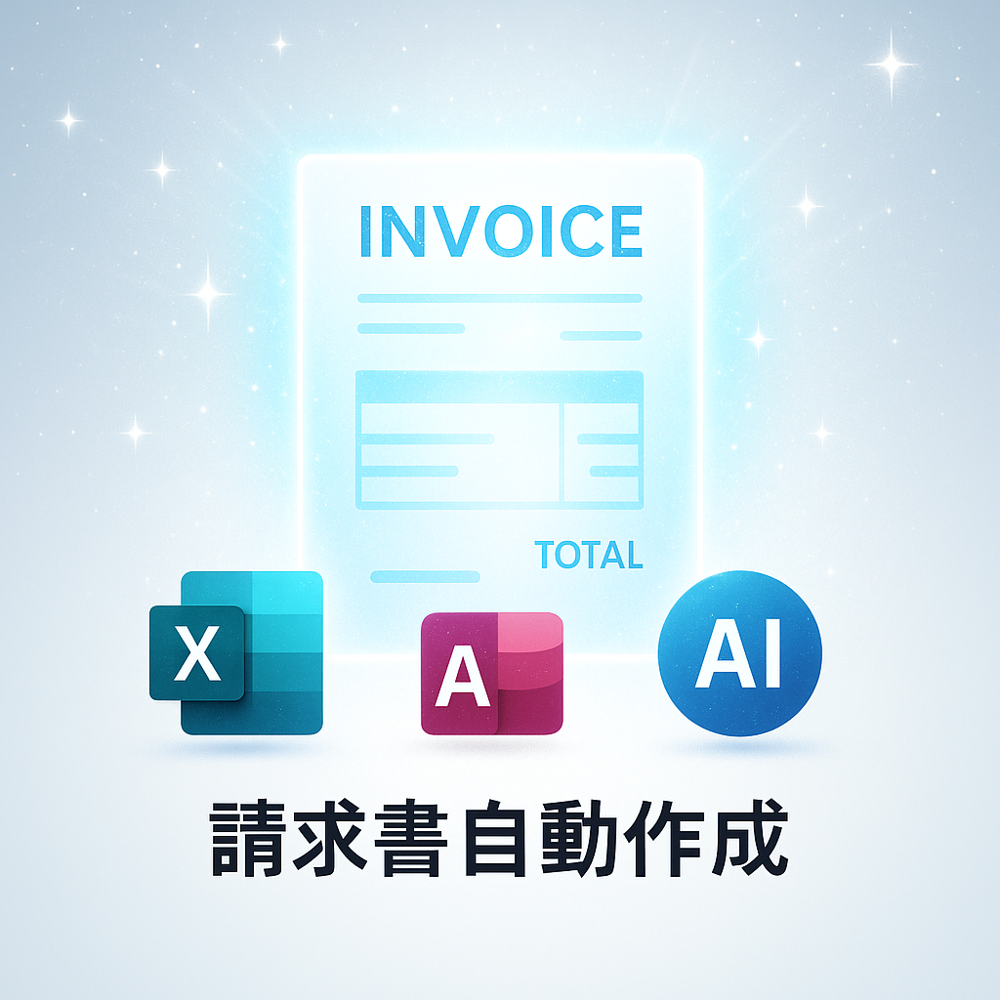
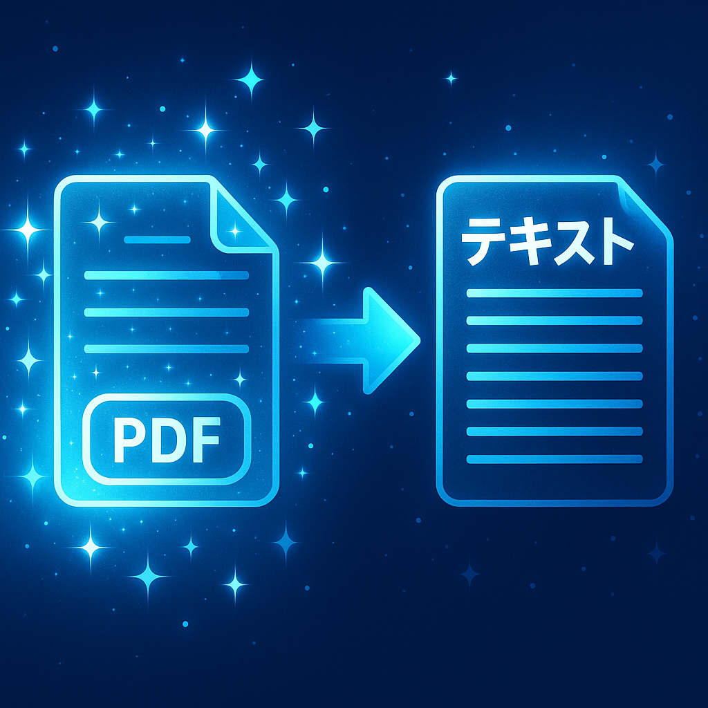

ブロック型 ACCESS｜BucketBlocks
Access / データストア / 汎用マスタ
「項目が増え続ける」「システム化するほどでもない」現場向けに、 テキスト・数値・日付を“バケツ”のように追加できる Access データベースです。
現場で困ることを、こういう仕組みに変えられます。
短期の現場で、限られた時間の中から業務の詰まりを見つけ、
Excel・Access・VBA・Power Automate Desktop・AIを組み合わせて、
現場が回る仕組みに整えることを大切にしています。
現在は、これまでの経験をもとに、
「AI＆Excelマクロ作成サポートツール」を自主制作しています。
現場の困りごとを、仕組みに変えるための制作・検証事例です。
Access / データストア / 汎用マスタ
「項目が増え続ける」「システム化するほどでもない」現場向けに、 テキスト・数値・日付を“バケツ”のように追加できる Access データベースです。

Excel マクロ / Access連携 / 請求書
Access の売上データから、Excel 請求書フォームへ明細を流し込み、 PDF出力とログ記録までを一気通貫で行うツールです。
詳細（デモ動画）を見る
PDF / テキスト化 / RPA連携
PDFをフォルダから自動で読み込み、テキスト化して蓄積・検索・共有へつなぐ仕組みです。 詳細はRPAページにまとめています。
RPAページへカードの「詳細」をクリックすると、ここに内容が表示されます。
プロンプト作成・コード保存・確認・バックアップ・復元・記録をまとめた、AI活用のための作業支援画面です。
このAI開発支援UIは、ChatGPTの回答をそのまま貼り付けて終わりにするのではなく、 依頼文を作る・回答コードを保存する・確認する・戻す・記録する ところまでを一つの流れとして扱うための仕組みです。
実際にAIを使って開発を進める中で、チャットが重くなる、コピーや貼り付けが崩れる、 どこで何を変更したか分からなくなる、元に戻せない不安が出るなどの課題がありました。 その経験をもとに、現場でAIを安全に使うための運用画面として整理しています。
現場で困ることを、こういう仕組みに変えられます。
経験 → 困ったこと → 毎回お願いすること → プロンプト化 → ボタン化 → AI支援UIへ組み込み。

AI＆Excelマクロ作成サポートツールのメイン画面
AIはコードや文章を作るだけではありません。 現場で使うためには、確認、保存、復元、引継ぎ、再利用まで含めた設計が必要です。 このUIでは、AIとのやり取りで発生する迷い・失敗・戻れない不安を減らし、 誰が見ても作業の流れを追える状態にすることを目指しています。
AI時代の現場設計記録
この数カ月、AI入力支援UIを作るために、ChatGPTとの作業ログを整理しながら、 プロンプト作成・コード保存・バックアップ・復元・確認フローを少しずつ仕組みにしてきました。
実際の運用では、チャットが重くなる、コピーや貼り付けが崩れる、 どこで何を変更したか分からなくなる、元に戻せない不安が出るなど、 AIを現場で使うための課題が見えてきました。
その経験から、単にAIにコードを書かせるのではなく、 設計・保存・復元・記録・再利用までを含めた 「AIを現場で安全に使うための仕組み」として整理しています。
経験 → 困ったこと → 毎回お願いすること → プロンプト化 → ボタン化 → AI支援UIへ組み込み。 この流れを、現場改善の暗黙知データベースとして育てています。
私にとってこのツールは、短期の現場で、限られた時間の中から業務の詰まりを見つけ、 Excel・Access・VBAで現場が回る仕組みに変えてきた経験の総決算のようなものです。
現場で使える“止まらない”仕組みを、わかりやすく。
AbeLab は、既存システムと連携しながら、Excel／Access／VBA／RPA（Power Automate Desktop）／AIなどを組み合わせて、 「入力を減らす」「ミスを減らす」「止まらない」業務フローをつくります。
まず“人がやっている手順”を尊重し、壊さずに改善します。 その上で、ログ・検証・例外処理まで含めて、翌月も回る仕組みへ整えます。
小さく始めて、現場に合わせて育てます。
“作って終わり”ではなく、運用が続く形に仕上げます。
お仕事のご相談・ご連絡はこちらから。
※公開用に整える段階で、記載情報を整理していきます。